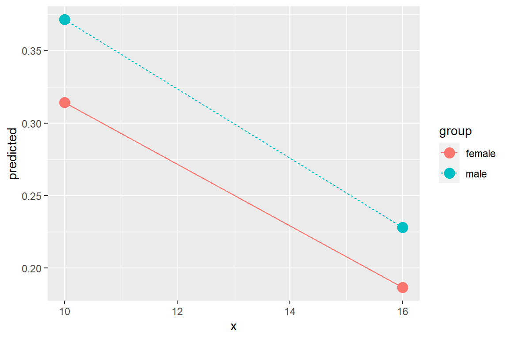
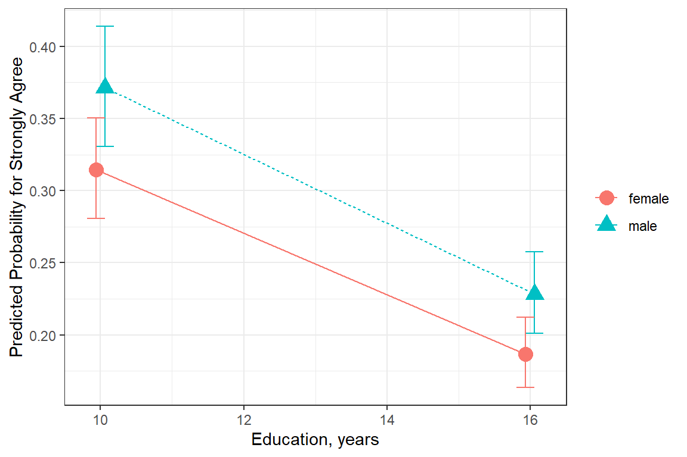
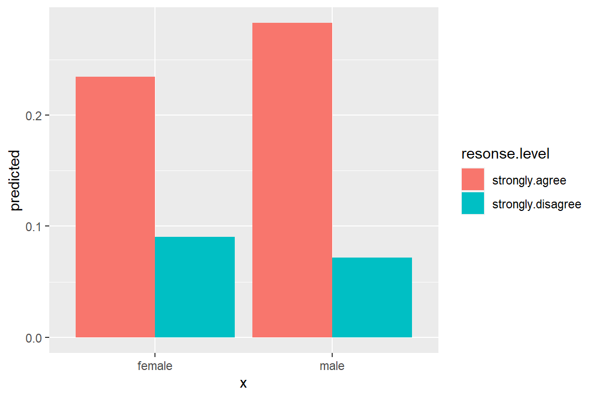

13 Ordered Logistic Regression - Ex: Spaking
library(tidyverse)
library(haven) # read in SPSS dataset
library(furniture) # nice table1() descriptives
library(stargazer) # display nice tables: summary & regression
library(texreg) # Convert Regression Output to LaTeX or HTML Tables
library(psych) # contains some useful functions, like headTail
library(car) # Companion to Applied Regression
library(sjPlot) # Quick plots and tables for models
library(car) # Companion to Applied Regression (a text book - includes datasets)
library(MASS) # Support Functions and Datasets
library(nnet) # Multinomial Log-Linear Models
library(pscl) # Political Science Computational Laboratory (ZIP)13.1 Background
This dataset comes from John Hoffman’s textbook: Regression Models for Categorical, Count, and Related Variables: An Applied Approach (2004) Amazon link, 2014 edition
Chapter 4: Ordered Logistic and Probit Regression Models
Dataset: The following example uses the SPSS data set gss.sav. The dependent variable of interest is labeled spanking.
" The pertinent question (
spanking) asks “Do you strongly agree, agree, disagree, or strongly disagree that it is sometimes necessary to discipline a child with a good, hard spanking?” The possible answers are coded as1= strongly agree,2= agree,3= disagree, and4= strongly disagree. A common hypothesis is that support for corporal punishment of children decreases at higher levels of education."
13.1.1 Raw Dataset
data_gss <- haven::read_spss("https://raw.githubusercontent.com/CEHS-research/data/master/Hoffmann_datasets/gss.sav") %>%
haven::as_factor()
data_gss %>%
dplyr::select(spanking, female, nonwhite, educate, income) %>%
dplyr::filter(!is.na(spanking)) %>% # about 1/3 of participants are missing this
head()# A tibble: 6 x 5
spanking female nonwhite educate income
<fct> <fct> <fct> <dbl> <dbl>
1 agree male white 16 12
2 agree female white 11 2
3 disagree male white 15 12
4 disagree male white 14 NA
5 agree female non-white 16 12
6 agree male white 12 NA13.1.2 Wrangle Data
data_gss_model <- data_gss %>%
dplyr::mutate(spankingN = as.numeric(spanking)) %>% # numeric version: 1, 2, 3, 4
dplyr::mutate(polviewsN = as.numeric(polviews)) %>%
dplyr::filter(complete.cases(educate, spanking)) # only include complete cases13.2 Exploratory Data Analysis
13.2.1 Entire Sample
data_gss %>%
furniture::table1(spanking,
na.rm = FALSE,
output = "markdown",
caption = "Hoffmann's Example 4.1 Summary of the Spanking Variable")| Mean/Count (SD/%) | |
|---|---|
| n = 2903 | |
| spanking | |
| strongly agree | 512 (17.6%) |
| agree | 890 (30.7%) |
| disagree | 357 (12.3%) |
| strongly disagree | 164 (5.6%) |
| NA | 980 (33.8%) |
data_gss %>%
ggplot(aes(spanking)) +
geom_bar() 
13.2.2 By Education
data_gss %>%
dplyr::group_by(forcats::fct_explicit_na(spanking)) %>%
furniture::table1("Educations, years" = educate,
"Education, factor" = factor(educate),
na.rm = FALSE,
digits = 2,
output = "markdown")| strongly agree | agree | disagree | strongly disagree | (Missing) | |
|---|---|---|---|---|---|
| n = 512 | n = 890 | n = 357 | n = 164 | n = 980 | |
| Educations, years | |||||
| 12.64 (2.96) | 13.40 (2.84) | 14.00 (2.74) | 14.24 (3.00) | 13.32 (2.95) | |
| Education, factor | |||||
| 0 | 0 (0%) | 2 (0.2%) | 0 (0%) | 0 (0%) | 2 (0.2%) |
| 3 | 5 (1%) | 0 (0%) | 0 (0%) | 0 (0%) | 3 (0.3%) |
| 4 | 1 (0.2%) | 0 (0%) | 0 (0%) | 1 (0.6%) | 4 (0.4%) |
| 5 | 4 (0.8%) | 5 (0.6%) | 0 (0%) | 1 (0.6%) | 3 (0.3%) |
| 6 | 5 (1%) | 5 (0.6%) | 1 (0.3%) | 0 (0%) | 3 (0.3%) |
| 7 | 7 (1.4%) | 8 (0.9%) | 0 (0%) | 1 (0.6%) | 7 (0.7%) |
| 8 | 25 (4.9%) | 15 (1.7%) | 5 (1.4%) | 2 (1.2%) | 33 (3.4%) |
| 9 | 15 (2.9%) | 20 (2.2%) | 7 (2%) | 4 (2.4%) | 23 (2.3%) |
| 10 | 27 (5.3%) | 44 (4.9%) | 11 (3.1%) | 4 (2.4%) | 35 (3.6%) |
| 11 | 39 (7.6%) | 42 (4.7%) | 16 (4.5%) | 5 (3%) | 53 (5.4%) |
| 12 | 152 (29.7%) | 270 (30.3%) | 97 (27.2%) | 33 (20.1%) | 297 (30.3%) |
| 13 | 56 (10.9%) | 90 (10.1%) | 41 (11.5%) | 19 (11.6%) | 90 (9.2%) |
| 14 | 56 (10.9%) | 111 (12.5%) | 41 (11.5%) | 19 (11.6%) | 112 (11.4%) |
| 15 | 19 (3.7%) | 47 (5.3%) | 14 (3.9%) | 14 (8.5%) | 59 (6%) |
| 16 | 59 (11.5%) | 105 (11.8%) | 68 (19%) | 31 (18.9%) | 129 (13.2%) |
| 17 | 13 (2.5%) | 45 (5.1%) | 14 (3.9%) | 6 (3.7%) | 42 (4.3%) |
| 18 | 17 (3.3%) | 43 (4.8%) | 15 (4.2%) | 11 (6.7%) | 39 (4%) |
| 19 | 3 (0.6%) | 15 (1.7%) | 8 (2.2%) | 2 (1.2%) | 13 (1.3%) |
| 20 | 8 (1.6%) | 20 (2.2%) | 18 (5%) | 11 (6.7%) | 29 (3%) |
| NA | 1 (0.2%) | 3 (0.3%) | 1 (0.3%) | 0 (0%) | 4 (0.4%) |
13.2.3 Spanking by Sex
data_gss %>%
dplyr::filter(complete.cases(female, spanking)) %>%
dplyr::select(female, spanking) %>%
table() %>%
addmargins() spanking
female strongly agree agree disagree strongly disagree Sum
male 243 388 156 56 843
female 269 502 201 108 1080
Sum 512 890 357 164 1923data_gss %>%
dplyr::filter(complete.cases(female, spanking)) %>%
furniture::tableX(female, spanking,
type = "count") spanking
female strongly agree agree disagree strongly disagree Total
male 243 388 156 56 843
female 269 502 201 108 1080
Total 512 890 357 164 1923 data_gss %>%
dplyr::filter(complete.cases(female, spanking)) %>%
furniture::tableX(female, spanking,
type = "row_perc") spanking
female strongly agree agree disagree strongly disagree Total
male 28.83 46.03 18.51 6.64 100.00
female 24.91 46.48 18.61 10.00 100.00
All 26.63 46.28 18.56 8.53 100.00data_gss %>%
dplyr::filter(complete.cases(female, spanking)) %>%
furniture::tableX(female, spanking,
type = "col_perc") spanking
female strongly agree agree disagree strongly disagree All
male 47.46 43.60 43.70 34.15 43.84
female 52.54 56.40 56.30 65.85 56.16
Total 100.00 100.00 100.00 100.00 100.00data_gss %>%
dplyr::filter(complete.cases(female, spanking)) %>%
furniture::tableX(female, spanking,
type = "cell_perc") spanking
female strongly agree agree disagree strongly disagree Total
male 12.64 20.18 8.11 2.91 43.84
female 13.99 26.11 10.45 5.62 56.16
Total 26.63 46.28 18.56 8.53 100.00data_gss %>%
dplyr::filter(complete.cases(female, spanking)) %>%
dplyr::group_by(spanking) %>%
furniture::table1(female)
--------------------------------------------------------------------
spanking
strongly agree agree disagree strongly disagree
n = 512 n = 890 n = 357 n = 164
female
male 243 (47.5%) 388 (43.6%) 156 (43.7%) 56 (34.1%)
female 269 (52.5%) 502 (56.4%) 201 (56.3%) 108 (65.9%)
--------------------------------------------------------------------13.3 Linear Regression
Linear regression is often ill-suited to fitting a likert rating, such as agreement.
13.3.1 Visualization
data_gss_model %>%
ggplot(aes(x = educate,
y = spankingN)) +
geom_count() + # point size relative to over-plotting
geom_smooth(method = "lm") + # add linear regression line (OLS)
theme_bw() +
labs(x = "Years of Formal Education",
y = "Spanking")
Figure 13.1: Hoffmann’s Figure 4.1
13.3.2 Fit the Model
fit_lm <- lm(spankingN ~ educate,
data = data_gss_model)
summary(fit_lm)
Call:
lm(formula = spankingN ~ educate, data = data_gss_model)
Residuals:
Min 1Q Median 3Q Max
-1.44768 -0.79947 -0.06955 0.66036 2.41660
Coefficients:
Estimate Std. Error t value Pr(>|t|)
(Intercept) 1.367326 0.093670 14.597 < 2e-16 ***
educate 0.054018 0.006839 7.898 4.73e-15 ***
---
Signif. codes: 0 '***' 0.001 '**' 0.01 '*' 0.05 '.' 0.1 ' ' 1
Residual standard error: 0.8729 on 1916 degrees of freedom
Multiple R-squared: 0.03153, Adjusted R-squared: 0.03103
F-statistic: 62.38 on 1 and 1916 DF, p-value: 4.73e-15anova(fit_lm)# A tibble: 2 x 5
Df `Sum Sq` `Mean Sq` `F value` `Pr(>F)`
<int> <dbl> <dbl> <dbl> <dbl>
1 1 47.5 47.5 62.4 4.73e-15
2 1916 1460. 0.762 NA NA 13.3.3 Tabulate Parameters
texreg::knitreg(fit_lm,
custom.model.name = "Linear Regression",
caption = "Hoffmann's Example 4.2",
caption.above = TRUE,
single.row = TRUE,
digits = 4)| Linear Regression | |
|---|---|
| (Intercept) | 1.3673 (0.0937)*** |
| educate | 0.0540 (0.0068)*** |
| R2 | 0.0315 |
| Adj. R2 | 0.0310 |
| Num. obs. | 1918 |
| p < 0.001; p < 0.01; p < 0.05 | |
13.3.4 Model Fit and Variance Explained
performance::performance(fit_lm)# A tibble: 1 x 6
AIC BIC R2 R2_adjusted RMSE Sigma
<dbl> <dbl> <dbl> <dbl> <dbl> <dbl>
1 4926. 4942. 0.0315 0.0310 0.872 0.873performance::r2(fit_lm)# R2 for Linear Regression
R2: 0.032
adj. R2: 0.03113.3.5 Residual Diagnostics
sjPlot::plot_model(fit_lm, type = "diag")[[1]]
Figure 13.2: Hoffman’s Figures 4.2 adn 4.3 Residual Diagnostics for a linear model on likery dependent variable - YUCK!
[[2]]
Figure 13.3: Hoffman’s Figures 4.2 adn 4.3 Residual Diagnostics for a linear model on likery dependent variable - YUCK!
[[3]]
Figure 13.4: Hoffman’s Figures 4.2 adn 4.3 Residual Diagnostics for a linear model on likery dependent variable - YUCK!
13.4 Ordered Logistic Regression
data_gss_model %>%
dplyr::group_by(forcats::fct_explicit_na(spanking)) %>%
furniture::table1("Sex" = female,
caption = "Hoffmann's Example 4.3 Crosstabulate DV with Sex",
na.rm = FALSE,
digits = 2,
total = TRUE,
output = "markdown")| Total | strongly agree | agree | disagree | strongly disagree | |
|---|---|---|---|---|---|
| n = 1918 | n = 511 | n = 887 | n = 356 | n = 164 | |
| Sex | |||||
| male | 841 (43.8%) | 243 (47.6%) | 387 (43.6%) | 155 (43.5%) | 56 (34.1%) |
| female | 1077 (56.2%) | 268 (52.4%) | 500 (56.4%) | 201 (56.5%) | 108 (65.9%) |
| NA | 0 (0%) | 0 (0%) | 0 (0%) | 0 (0%) | 0 (0%) |
data_gss_model %>%
furniture::tableX(female, spanking) spanking
female strongly agree agree disagree strongly disagree Total
male 243 387 155 56 841
female 268 500 201 108 1077
Total 511 887 356 164 1918 13.5 Proportional-odds (ordinal) Logistic Regression
This type of logisit regression model forces the predictors to have similar relationship with the outcome (slopes), but different means (intercepts). This is called the proportional odds assumption.
13.5.1 Fit Model 1: Sex
Use polr() function in the base \(R\) MASS package. While outcome variable (dependent variable, “Y”) may be a regular factor, it is preferable to specify it as an ordered factor.
fit_polr_1 <- MASS::polr(spanking ~ female,
data = data_gss_model)
summary(fit_polr_1)Call:
MASS::polr(formula = spanking ~ female, data = data_gss_model)
Coefficients:
Value Std. Error t value
femalefemale 0.2116 0.08532 2.48
Intercepts:
Value Std. Error t value
strongly agree|agree -0.8967 0.0694 -12.9114
agree|disagree 1.1094 0.0711 15.6078
disagree|strongly disagree 2.4922 0.0958 26.0026
Residual Deviance: 4719.394
AIC: 4727.394 13.5.2 Extract Parameters
13.5.2.1 Logit Scale
fit_polr_1$zeta strongly agree|agree agree|disagree
-0.8966862 1.1093754
disagree|strongly disagree
2.4921855 fit_polr_1 %>% coef()femalefemale
0.2116244 fit_polr_1 %>% confint() 2.5 % 97.5 %
0.04451894 0.37901780 13.5.2.2 Odds-Ratio Scale
fit_polr_1$zeta %>% exp() strongly agree|agree agree|disagree
0.4079192 3.0324638
disagree|strongly disagree
12.0876653 fit_polr_1 %>% coef() %>% exp()femalefemale
1.235684 fit_polr_1 %>% confint() %>% exp() 2.5 % 97.5 %
1.045525 1.460849 13.5.2.3 Predicted Probabilities
effects::allEffects(fit_polr_1) model: spanking ~ female
female effect (probability) for strongly agree
female
male female
0.289732 0.248186
female effect (probability) for agree
female
male female
0.4622807 0.4623011
female effect (probability) for disagree
female
male female
0.1715795 0.1967672
female effect (probability) for strongly disagree
female
male female
0.07640782 0.09274572 13.5.3 Tabulate parameters
texreg::knitreg(fit_polr_1,
custom.model.name = c("b (SE)"),
custom.coef.map = list("femalefemale" = "Female vs. Male",
"strongly agree|agree" = "strongly agree|agree",
"agree|disagree" = "agree|disagree",
"disagree|strongly disagree" = "disagree|strongly disagree"),
groups = list("Predictors" = 1,
"Cut Values (i.e. threasholds)" = 2:4),
caption = "Hoffmann's Example 4.4 Ordered Logistic Regression",
caption.above = TRUE,
single.row = TRUE,
digits = 4)| b (SE) | |
|---|---|
| Predictors | |
| Female vs. Male | 0.2116 (0.0853)* |
| Cut Values (i.e. threasholds) | |
| strongly agree|agree | -0.8967 (0.0694)*** |
| agree|disagree | 1.1094 (0.0711)*** |
| disagree|strongly disagree | 2.4922 (0.0958)*** |
| AIC | 4727.3944 |
| BIC | 4749.6306 |
| Log Likelihood | -2359.6972 |
| Deviance | 4719.3944 |
| Num. obs. | 1918 |
| p < 0.001; p < 0.01; p < 0.05 | |
13.5.4 Predicted Probabilities
ggeffects::ggeffect(model = fit_polr_1,
terms = c("female"))# A tibble: 8 x 7
x response.level predicted std.error conf.low conf.high group
<fct> <chr> <dbl> <dbl> <dbl> <dbl> <fct>
1 male strongly.agree 0.290 0.0694 0.263 0.319 1
2 female strongly.agree 0.248 0.0647 0.225 0.273 1
3 male agree 0.462 0.0460 0.440 0.485 1
4 female agree 0.462 0.0459 0.440 0.485 1
5 male disagree 0.172 0.0708 0.153 0.192 1
6 female disagree 0.197 0.0653 0.177 0.218 1
7 male strongly.disagree 0.0764 0.0958 0.0642 0.0908 1
8 female strongly.disagree 0.0927 0.0889 0.0791 0.108 1 ggeffects::ggeffect(model = fit_polr_1,
terms = c("female")) %>%
dplyr::filter(x == "female")# A tibble: 4 x 7
x response.level predicted std.error conf.low conf.high group
<fct> <chr> <dbl> <dbl> <dbl> <dbl> <fct>
1 female strongly.agree 0.248 0.0647 0.225 0.273 1
2 female agree 0.462 0.0459 0.440 0.485 1
3 female disagree 0.197 0.0653 0.177 0.218 1
4 female strongly.disagree 0.0927 0.0889 0.0791 0.108 1 13.5.5 Plot Predicted Probabilities
ggeffects::ggeffect(model = fit_polr_1,
terms = c("female")) %>% # x-axis
data.frame() %>%
ggplot(aes(x = x,
y = predicted,
group = response.level,
color = response.level)) +
geom_errorbar(aes(ymin = conf.low,
ymax = conf.high),
width = .25) +
geom_point(size = 4) +
geom_line(aes(linetype = response.level)) 
ggeffects::ggeffect(model = fit_polr_1,
terms = c("female")) %>% # x-axis
data.frame() %>%
dplyr::mutate(response.level = response.level %>%
forcats::fct_reorder(predicted) %>%
forcats::fct_rev()) %>%
ggplot(aes(x = x,
y = predicted,
group = response.level,
color = response.level)) +
geom_errorbar(aes(ymin = conf.low,
ymax = conf.high),
width = .25) +
geom_point(size = 4) +
geom_line(aes(linetype = response.level)) +
theme_bw() +
labs(x = NULL,
y = "Predicted Probability",
color = "Spanking:",
shape = "Spanking:",
linetype = "Spanking:") +
theme(legend.key.width = unit(2, "cm")) +
scale_linetype_manual(values = c("solid", "longdash", "dotdash", "dotted")) +
scale_shape_manual(values = c(0, 1, 2, 8))
13.5.6 Model Fit and Variance Explained
fit_polr_0 <- MASS::polr(spanking ~ 1,
data = data_gss_model)anova(fit_polr_1, fit_polr_0)# A tibble: 2 x 7
Model `Resid. df` `Resid. Dev` Test ` Df` `LR stat.` `Pr(Chi)`
<chr> <dbl> <dbl> <chr> <dbl> <dbl> <dbl>
1 1 1915 4726. "" NA NA NA
2 female 1914 4719. "1 vs 2" 1 6.16 0.0130performance::performance(fit_polr_1)Can't calculate log-loss.
Can't calculate proper scoring rules for ordinal, multinomial or cumulative link models.# A tibble: 1 x 5
AIC BIC R2_Nagelkerke RMSE Sigma
<dbl> <dbl> <dbl> <dbl> <dbl>
1 4727. 4750. 0.00351 2.05 1.57performance::r2(fit_polr_1) Nagelkerke's R2: 0.00413.5.7 Assumptions
13.5.7.1 Proportional Odds: Brant Test
The poTest function implements tests proposed by Brant (1990) for proportional odds for logistic models fit by the polr() function in the MASS package.
# Hoffmann's Examle 4.5 (continued...)
car::poTest(fit_polr_1)
Tests for Proportional Odds
MASS::polr(formula = spanking ~ female, data = data_gss_model)
b[polr] b[>strongly agree] b[>agree] b[>disagree] Chisquare df
Overall 3.01 2
femalefemale 0.212 0.204 0.183 0.446 3.01 2
Pr(>Chisq)
Overall 0.22
femalefemale 0.22A significant test statistics provides evidence that the parallel regression assumption has been violated!
13.5.8 Fit Model 2: Sex + Covars
fit_polr_2 <- MASS::polr(spanking ~ female + educate + polviewsN,
data = data_gss_model)
summary(fit_polr_2)Call:
MASS::polr(formula = spanking ~ female + educate + polviewsN,
data = data_gss_model)
Coefficients:
Value Std. Error t value
femalefemale 0.2532 0.08825 2.869
educate 0.1153 0.01564 7.374
polviewsN -0.2215 0.03248 -6.818
Intercepts:
Value Std. Error t value
strongly agree|agree -0.2977 0.2671 -1.1146
agree|disagree 1.7845 0.2706 6.5935
disagree|strongly disagree 3.1926 0.2793 11.4312
Residual Deviance: 4396.504
AIC: 4408.504
(97 observations deleted due to missingness)13.5.9 Extract Parameters
13.5.9.1 Logit Scale
fit_polr_2$zeta strongly agree|agree agree|disagree
-0.2976843 1.7844863
disagree|strongly disagree
3.1926342 fit_polr_2 %>% coef()femalefemale educate polviewsN
0.2532132 0.1152980 -0.2214577 fit_polr_2 %>% confint() 2.5 % 97.5 %
femalefemale 0.08039420 0.4263963
educate 0.08472724 0.1460403
polviewsN -0.28526298 -0.157904613.5.9.2 Odds-Ratio Scale
fit_polr_2$zeta %>% exp() strongly agree|agree agree|disagree
0.7425358 5.9565193
disagree|strongly disagree
24.3524926 fit_polr_2 %>% coef() %>% exp()femalefemale educate polviewsN
1.2881578 1.1222079 0.8013498 fit_polr_2 %>% confint() %>% exp() 2.5 % 97.5 %
femalefemale 1.0837142 1.5317277
educate 1.0884202 1.1572429
polviewsN 0.7518165 0.853931213.5.10 Tabulate parameters
texreg::knitreg(fit_polr_2,
custom.model.name = c("b (SE)"),
custom.coef.map = list("femalefemale" = "Female vs. Male",
"educate" = "Years of Education",
"polviewsN" = "Level of Polytical Views",
"strongly agree|agree" = "strongly agree|agree",
"agree|disagree" = "agree|disagree",
"disagree|strongly disagree" = "disagree|strongly disagree"),
groups = list("Predictors" = 1:3,
"Cut Values" = 4:6),
caption = "Hoffmann's Example 4.7 Ordered Logistic Regression",
caption.above = TRUE,
single.row = TRUE,
digits = 4)| b (SE) | |
|---|---|
| Predictors | |
| Female vs. Male | 0.2532 (0.0883)** |
| Years of Education | 0.1153 (0.0156)*** |
| Level of Polytical Views | -0.2215 (0.0325)*** |
| Cut Values | |
| strongly agree|agree | -0.2977 (0.2671) |
| agree|disagree | 1.7845 (0.2706)*** |
| disagree|strongly disagree | 3.1926 (0.2793)*** |
| AIC | 4408.5038 |
| BIC | 4441.5466 |
| Log Likelihood | -2198.2519 |
| Deviance | 4396.5038 |
| Num. obs. | 1821 |
| p < 0.001; p < 0.01; p < 0.05 | |
13.5.11 Predicted Probabilities
The
ggeffectspackage computes estimated marginal means (predicted values) for the response, at the margin of specific values or levels from certain model terms, i.e. it generates predictions by a model by holding the non-focal variables constant and varying the focal variable(s).
ggpredict()usespredict()for generating predictions- factors: uses the reference level
ggeffect()computes marginal effects by internally callingeffects::Effect()- factors: compute a kind of “average” value, which represents the proportions of each factor’s category
ggemmeans()usesemmeans::emmeans()- factors: compute a kind of “average” value, which represents the proportions of each factor’s category
Use condition to set a specific level for factors in ggemmeans(), so factors are not averaged over their categories, but held constant at a given level.
ggeffects::ggpredict()Adjusted for: * educate = 13.51 The grand mean value * polviewsN = 4.17 The grand mean value
## Hoffmann's Example 4.8 (continues...approximated)
ggeffects::ggpredict(model = fit_polr_2,
terms = c("female")) # A tibble: 8 x 7
x predicted std.error conf.low conf.high response.level group
<fct> <dbl> <dbl> <dbl> <dbl> <chr> <fct>
1 male 0.283 0.253 0.193 0.393 strongly agree 1
2 male 0.477 0.253 0.357 0.600 agree 1
3 male 0.169 0.253 0.110 0.250 disagree 1
4 male 0.0718 0.253 0.0450 0.113 strongly disagree 1
5 female 0.234 0.276 0.151 0.344 strongly agree 1
6 female 0.476 0.276 0.346 0.610 agree 1
7 female 0.199 0.276 0.126 0.299 disagree 1
8 female 0.0906 0.276 0.0549 0.146 strongly disagree 1 ggeffects::ggpredict(model = fit_polr_2,
terms = c("female")) %>%
data.frame()# A tibble: 8 x 7
x predicted std.error conf.low conf.high response.level group
<fct> <dbl> <dbl> <dbl> <dbl> <chr> <fct>
1 male 0.283 0.253 0.193 0.393 strongly agree 1
2 male 0.477 0.253 0.357 0.600 agree 1
3 male 0.169 0.253 0.110 0.250 disagree 1
4 male 0.0718 0.253 0.0450 0.113 strongly disagree 1
5 female 0.234 0.276 0.151 0.344 strongly agree 1
6 female 0.476 0.276 0.346 0.610 agree 1
7 female 0.199 0.276 0.126 0.299 disagree 1
8 female 0.0906 0.276 0.0549 0.146 strongly disagree 1 13.6 Hoffmann’s Example 4.8 (continues…approximated)
ggeffects::ggpredict()Adjusted for: * female = male The reference category * polviewsN = 4.17 The grand mean value
ggeffects::ggpredict(model = fit_polr_2,
terms = c("educate [10, 16]", # 1st = x
"female")) %>% # 2nd = group
data.frame() %>%
dplyr::filter(group == "male")# A tibble: 8 x 7
x predicted std.error conf.low conf.high response.level group
<dbl> <dbl> <dbl> <dbl> <dbl> <chr> <fct>
1 10 0.371 0.209 0.282 0.471 strongly agree male
2 10 0.454 0.209 0.356 0.556 agree male
3 10 0.125 0.209 0.0868 0.177 disagree male
4 10 0.0491 0.209 0.0331 0.0721 strongly disagree male
5 16 0.228 0.287 0.144 0.342 strongly agree male
6 16 0.475 0.287 0.340 0.614 agree male
7 16 0.203 0.287 0.127 0.309 disagree male
8 16 0.0935 0.287 0.0555 0.153 strongly disagree male
ggeffects::ggeffect()Adjusted for: * female computed a kind of “average” value, which represents the proportions of male/female * polviewsN = 4.17 The grand mean value
ggeffects::ggeffect(model = fit_polr_2,
terms = c("educate [10, 16]")) %>%
data.frame()# A tibble: 8 x 7
x response.level predicted std.error conf.low conf.high group
<dbl> <chr> <dbl> <dbl> <dbl> <dbl> <fct>
1 10 strongly.agree 0.339 0.0744 0.307 0.372 1
2 16 strongly.agree 0.204 0.0692 0.183 0.227 1
3 10 agree 0.465 0.0498 0.441 0.490 1
4 16 agree 0.469 0.0487 0.445 0.493 1
5 10 disagree 0.139 0.0793 0.122 0.159 1
6 16 disagree 0.221 0.0663 0.199 0.244 1
7 10 strongly.disagree 0.0561 0.105 0.0461 0.0682 1
8 16 strongly.disagree 0.106 0.0885 0.0908 0.124 1 ggeffects::ggemmeans(model = fit_polr_2,
terms = c("educate [10, 16]"),
condition = c(female = "female")) %>%
data.frame()# A tibble: 8 x 7
x predicted std.error conf.low conf.high response.level group
<dbl> <dbl> <dbl> <dbl> <dbl> <fct> <fct>
1 10 0.314 0.0178 0.279 0.349 strongly agree 1
2 10 0.472 0.0124 0.448 0.496 agree 1
3 10 0.151 0.0107 0.130 0.172 disagree 1
4 10 0.0624 0.00641 0.0498 0.0749 strongly disagree 1
5 16 0.187 0.0124 0.162 0.211 strongly agree 1
6 16 0.461 0.0125 0.437 0.486 agree 1
7 16 0.235 0.0130 0.209 0.260 disagree 1
8 16 0.117 0.0100 0.0976 0.137 strongly disagree 1 Predictions for specific values: females with 10 or 16 years education
ggeffects::ggeffect(model = fit_polr_2,
terms = c("female", # 1st var = `x`
"educate [10, 16]")) %>% # 2nd var = `group`
data.frame()# A tibble: 16 x 7
x group response.level predicted std.error conf.low conf.high
<fct> <dbl> <chr> <dbl> <dbl> <dbl> <dbl>
1 male 10 strongly.agree 0.371 0.0909 0.331 0.414
2 female 10 strongly.agree 0.314 0.0825 0.281 0.350
3 male 16 strongly.agree 0.228 0.0818 0.201 0.258
4 female 16 strongly.agree 0.187 0.0820 0.164 0.212
5 male 10 agree 0.454 0.0544 0.428 0.481
6 female 10 agree 0.472 0.0496 0.448 0.496
7 male 16 agree 0.475 0.0489 0.451 0.499
8 female 16 agree 0.461 0.0504 0.437 0.486
9 male 10 disagree 0.125 0.0937 0.106 0.147
10 female 10 disagree 0.151 0.0834 0.132 0.174
11 male 16 disagree 0.203 0.0756 0.180 0.228
12 female 16 disagree 0.235 0.0721 0.210 0.261
13 male 10 strongly.disagree 0.0491 0.120 0.0392 0.0613
14 female 10 strongly.disagree 0.0624 0.110 0.0509 0.0762
15 male 16 strongly.disagree 0.0935 0.101 0.0780 0.112
16 female 16 strongly.disagree 0.117 0.0968 0.0990 0.138 ggeffects::ggemmeans(model = fit_polr_2,
terms = "female",
condition = c(educate = 12,
polviewsN = 4.5)) # A tibble: 8 x 7
x predicted std.error conf.low conf.high response.level group
<fct> <dbl> <dbl> <dbl> <dbl> <fct> <fct>
1 male 0.335 0.0169 0.302 0.368 strongly agree 1
2 male 0.467 0.0124 0.442 0.491 agree 1
3 male 0.141 0.00969 0.122 0.160 disagree 1
4 male 0.0570 0.00571 0.0458 0.0682 strongly disagree 1
5 female 0.281 0.0141 0.254 0.309 strongly agree 1
6 female 0.477 0.0121 0.453 0.501 agree 1
7 female 0.169 0.0101 0.149 0.189 disagree 1
8 female 0.0723 0.00653 0.0595 0.0851 strongly disagree 1 13.6.1 Plot Predicted Probabilites
ggeffects::ggeffect(model = fit_polr_2,
terms = c("educate [10, 16]", # x-axis
"female")) %>% # lines by group
data.frame() %>%
ggplot(aes(x = x,
y = predicted,
color = group,
shape = group)) +
geom_point(size = 4) +
geom_line(aes(linetype = group)) +
facet_wrap(~ response.level)
ggeffects::ggeffect(model = fit_polr_2,
terms = c("educate [10, 16]", # x-axis
"female")) %>% # lines by group
data.frame() %>%
dplyr::filter(response.level == "strongly.agree") %>%
ggplot(aes(x = x,
y = predicted,
color = group)) +
geom_point(size = 4) +
geom_line(aes(linetype = group)) 
ggeffects::ggeffect(model = fit_polr_2,
terms = c("educate [10, 16]", # x-axis
"female")) %>% # lines by group
data.frame() %>%
dplyr::filter(response.level == "strongly.agree") %>%
ggplot(aes(x = x,
y = predicted,
color = group,
shape = group)) +
geom_errorbar(aes(ymin = conf.low,
ymax = conf.high),
width = .5,
position = position_dodge(width =.25)) +
geom_point(size = 4,
position = position_dodge(width =.25)) +
geom_line(aes(linetype = group),
position = position_dodge(width =.25)) +
theme_bw() +
labs(x = "Education, years",
y = "Predicted Probability for Strongly Agree",
color = NULL,
shape = NULL,
linetype = NULL)
ggeffects::ggeffect(model = fit_polr_2,
terms = c("educate [10, 16]", # x-axis
"female")) %>% # lines by group
data.frame() %>%
dplyr::mutate(group = forcats::fct_rev(group)) %>%
dplyr::filter(response.level == "strongly.agree") %>%
ggplot(aes(x = x,
y = predicted,
shape = group)) +
geom_errorbar(aes(ymin = conf.low,
ymax = conf.high),
width = .25,
position = position_dodge(.2)) +
geom_point(size = 4,
position = position_dodge(.2)) +
geom_line(aes(linetype = group),
size = 1,
position = position_dodge(.2)) +
theme_bw() +
theme(legend.position = c(1, 1),
legend.justification = c(1.1, 1.1),
legend.key.width = unit(2, "cm"),
legend.background = element_rect(color = "black")) +
scale_linetype_manual(values = c("solid", "longdash")) +
labs(x = "Years of Formal Education",
y = "Predicted Probabilit for\nResponding 'Strongly Agree'",
color = NULL,
shape = NULL,
linetype = NULL,
title = "Adjusted Predictions: Strongly Agree Spanking is Appropriate")Figure 13.5: Hoffmann’s Figure 4.4
ggeffects::ggeffect(model = fit_polr_2,
terms = c("female")) %>% # lines by group
data.frame() %>%
dplyr::filter(response.level %in% c("strongly.agree",
"strongly.disagree")) %>%
dplyr::mutate(resonse.level = factor(response.level)) %>%
ggplot(aes(x = x,
y = predicted,
fill = resonse.level)) +
geom_col(position = position_dodge()) 
ggeffects::ggeffect(model = fit_polr_2,
terms = c("female")) %>% # lines by group
data.frame() %>%
dplyr::filter(response.level %in% c("strongly.agree",
"strongly.disagree")) %>%
dplyr::mutate(resonse.level = factor(response.level)) %>%
ggplot(aes(x = forcats::fct_rev(x),
y = predicted,
fill = resonse.level)) +
geom_col(position = position_dodge()) +
theme_bw() +
theme(legend.position = "bottom") +
scale_fill_manual(values = c("gray30", "gray70")) +
labs(x = NULL,
y = "Predicted Probability of Response",
fill = NULL,
title = "Attitues towareds Spanking, by Sex")Figure 13.6: Hoffmann’s Figure 4.5
13.6.2 Model Fit and Variance Explained
fit_polr_1redeo <- MASS::polr(spanking ~ female,
data = data_gss_model %>%
dplyr::filter(complete.cases(educate, polviewsN)))anova(fit_polr_2, fit_polr_1redeo)# A tibble: 2 x 7
Model `Resid. df` `Resid. Dev` Test ` Df` `LR stat.` `Pr(Chi)`
<chr> <dbl> <dbl> <chr> <dbl> <dbl> <dbl>
1 female 1817 4501. "" NA NA NA
2 female + educate~ 1815 4397. "1 vs~ 2 105. 0performance::compare_performance(fit_polr_2, fit_polr_1redeo, rank = TRUE)# A tibble: 2 x 8
Name Model AIC BIC R2_Nagelkerke RMSE Sigma Performance_Score
<chr> <chr> <dbl> <dbl> <dbl> <dbl> <dbl> <dbl>
1 fit_polr_2 polr 4409. 4442. 0.179 2.06 1.56 0.8
2 fit_polr_1redeo polr 4509. 4531. 0.00384 2.06 1.57 0.213.6.3 Assumptions
13.6.3.1 Proportional Odds: Brant Test
The poTest function implements tests proposed by Brant (1990) for proportional odds for logistic models fit by the polr() function in the MASS package.
# Hoffmann's Example 4.8
car::poTest(fit_polr_2)
Tests for Proportional Odds
MASS::polr(formula = spanking ~ female + educate + polviewsN,
data = data_gss_model)
b[polr] b[>strongly agree] b[>agree] b[>disagree] Chisquare df
Overall 8.80 6
femalefemale 0.2532 0.2342 0.2180 0.4719 2.64 2
educate 0.1153 0.1248 0.1036 0.0927 1.17 2
polviewsN -0.2215 -0.1622 -0.2558 -0.2872 4.85 2
Pr(>Chisq)
Overall 0.185
femalefemale 0.268
educate 0.558
polviewsN 0.089 .
---
Signif. codes: 0 '***' 0.001 '**' 0.01 '*' 0.05 '.' 0.1 ' ' 1A significant test statistics provides evidence that the parallel regression assumption has been violated!